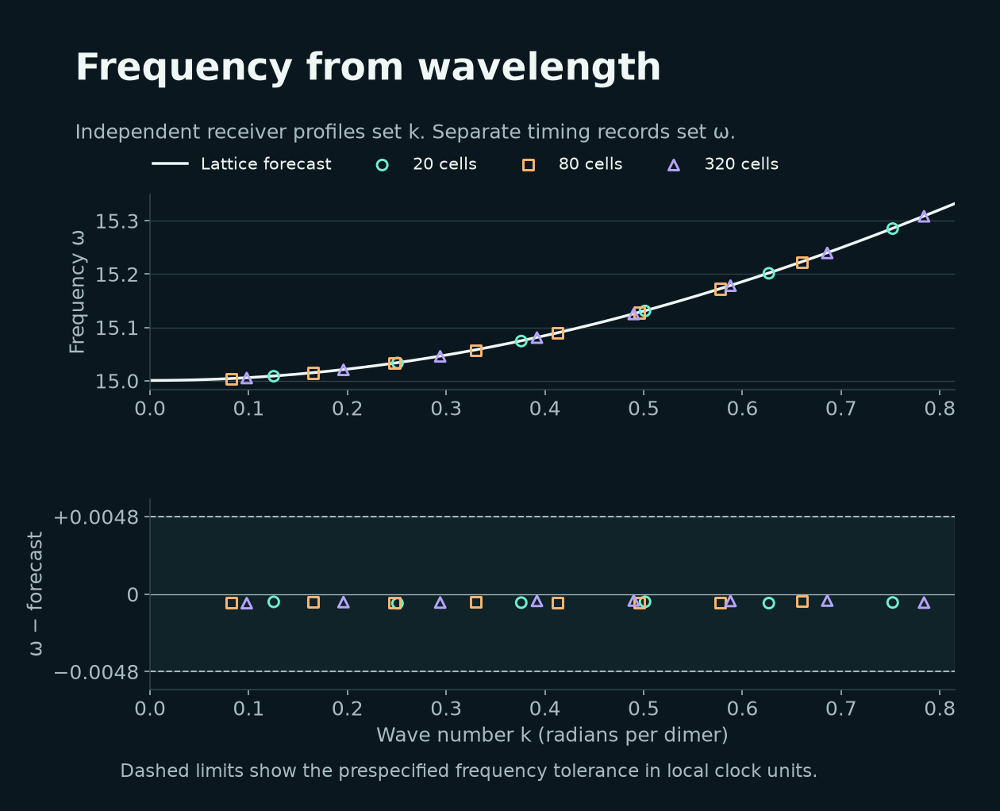

A matter wave on a strand
Even matter can travel as a wave. A theory of matter should explain how the spacing of its peaks relates to how fast it oscillates. Here observers measure the spacing along a chain, predict the frequency, and check it with a separate clock.
- Local validation boards
- 3 of 3
- Measured frequencies
- 22
- Low-wave-number lines
- 14
How fast does the pattern change?
Each dimer has one load at one of its two ends. Preparing a reversal in the alternating orientation gives distant observers something to detect. In a separate frequency experiment, profiles from even-numbered holds give the wave number k. Timing several pairs of oscillations lets the observer infer the individual frequencies ω. Two local coupling measurements set the forecast before comparison with those frequencies.

Could the launch settings explain the result?
Odd-numbered holds are kept out of the wavelength fit. A lower spatial error means a closer match to those held-out receiver records. On every board, using the wavelength measured by the receivers brings the error below the cutoff. Substituting the launch wavelength sends it far above. The last two columns give the largest measured change at a distant receiver, with and without coupling.
| Board | Measured k error | Pass ceiling | Launch k error | Distant, on | Distant, off |
|---|---|---|---|---|---|
| 20 cells | 422.56 | 554.07 | 2,786,515 | 28.93 pp | 0.18 pp |
| 80 cells | 860.42 | 1,137.74 | 792,450 | 32.31 pp | 0.14 pp |
| 320 cells | 786.58 | 963.37 | 1,794,431 | 18.43 pp | 0.15 pp |
What has been demonstrated?
This is local validation of a propagating collective mode on a prepared one-dimensional strand. Its connecting memories remain coherent and unread during flight. An earlier decoder failed on two boards and informed this revision. OpenWave lists row 30 as untested. A full-credit filing is on hold pending publication and adoption of the exact candidate and decoder, followed by a prospective public run.
Frozen author source 92370140edfb, confirmation v3. Plotted counts, predictions and frequencies (JSON) · Official row · Figure renderer (Python)